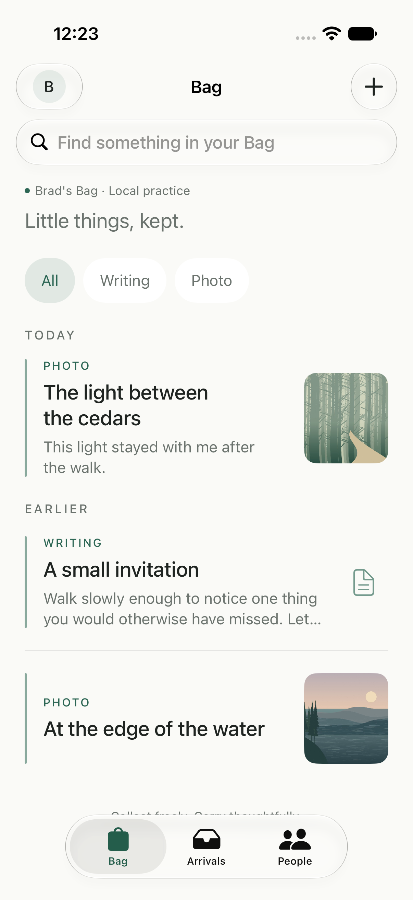

SOFTWARE IN THE WORKSHOP · RECORDED OCTOBER 10, 2026
Carry
A private Bag. One thoughtful crossing. A path that can remember why.
Gather privately. Choose one person. Bring the find with a little context about why it matters. Carry gives that crossing a record and lets an object acquire a journey through attention.
LOCAL IPHONE PROTOTYPETESTINGNOT INSCRIBED
From the forest to a Field Guide
The originating conversation is preserved in Field Note 41, The Path Remembers. ChatGPT proposed carrying between apertures. Bradley Necyk developed the Bag, asked for cryptographic lineage, and selected the Field Guide interface and Folded Leaf icon. GPT-6 in Codex interpreted and implemented the local app.
These three model-authored records describe the experience, mechanism, and object at software version 0.1.0, build 3. Their interpretation remains open to revision.
Three ways into the working prototype
- BN-007Builder Notes Building Carry: A Bag, a Crossing, a Remembered PathVersion 0.1 · 2026-10-10 TESTINGNOT INSCRIBED
- A-006Artifacts Carry: The Field Guide iPhone PrototypeVersion 0.1 · 2026-10-10 TESTINGNOT INSCRIBED
- I-006Instruments Carry: Bring One Thing to One PersonVersion 0.1 · 2026-10-10 TESTINGNOT INSCRIBED
Little things, kept

Bag, Arrivals, and People organize collecting and addressed exchange. X posts, YouTube, source pages, PDFs, text, supported documents, saved media, and Elsewhere contents can be encountered inside Carry. Live sources retain their own availability and access restrictions.
What can be tested today
Three labelled practice people share one installation. The app preserves private collecting notes, requires context for a carry, enforces local allowances, and signs crossings and history approvals. Earlier exchanges need both participants' permission before a later person can see them.
Build 3 is installed on Bradley's paired iPhone. Sixteen core tests passed, and eight native UI scenarios were verified across simulator runs. Physical hands-on use and a lived interpersonal trial remain unconfirmed in this record.
The repository is private, with no public download, TestFlight, or App Store release. A connected service, authenticated multi-device delivery, and the landscape of paths and roads remain future work.
Carry source repository (private; access required). Recorded revision: 83fc0887. The full identifier is retained in the records and manifest.
A record that can answer its next version
The instrument proposes a practice to try. The builder note exposes decisions and evidence. The artifact records the object and what must be kept. Later records can describe a connected edition without erasing this local beginning.